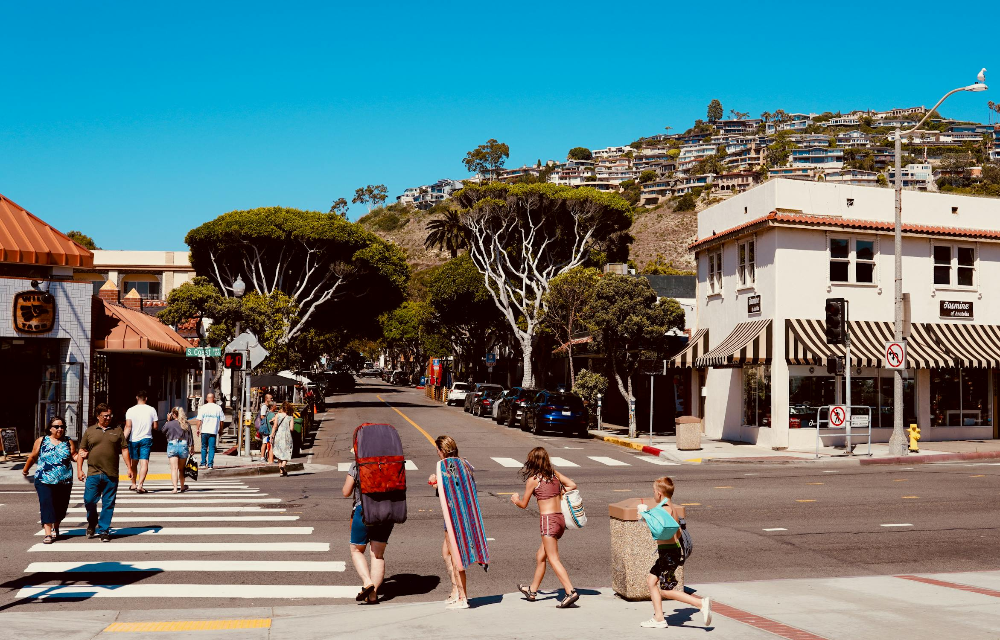
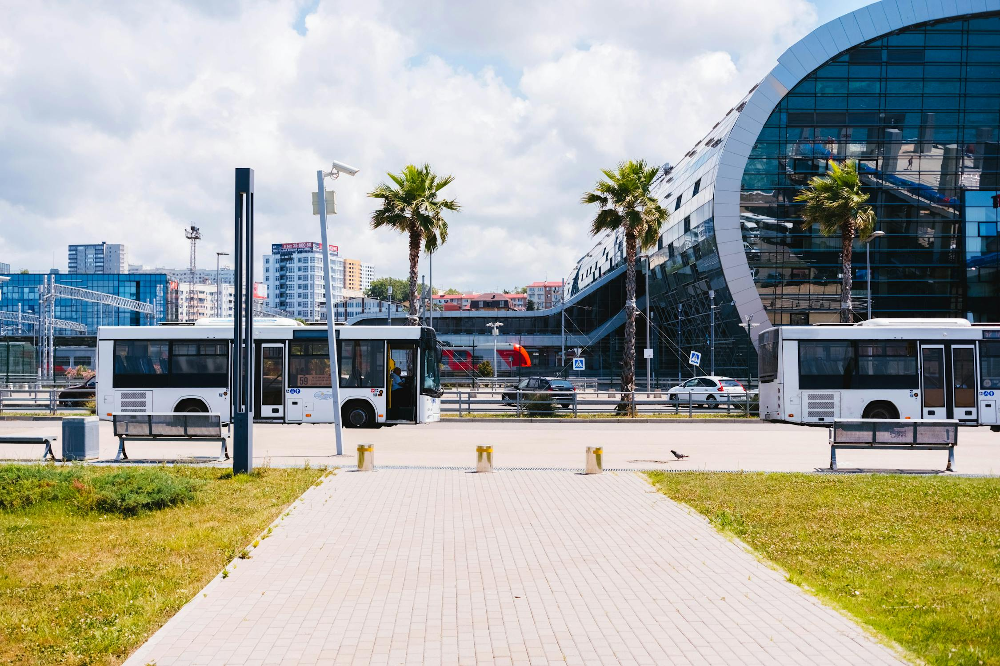
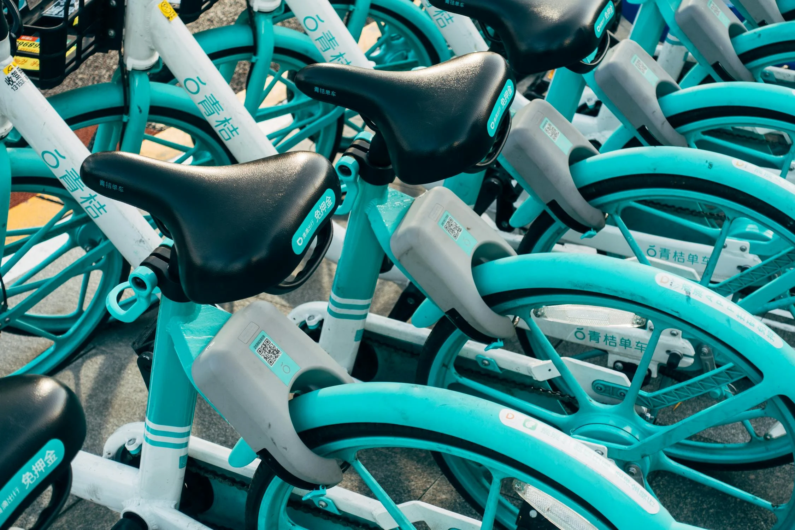

Getting Around Taniti

Walking
Taniti City is very walkable, featuring many sidewalks and mostly flat-unvarried terrain. Many tourists stay near Merriton landing to explore on foot.

Buses/Taxis
Public buses serve Taniti City and run from 5 a.m. to 11 p.m. every day. Private buses serve the rest of the island. Taxis are also available in Taniti City.

Car Rental
For longer excursions, rental cars can be obtained daily from a local rental agency near the airport.

Biking
Bikes have also become a popular and inexpensive way of exploring Taniti, especially Taniti City. You can find bike rentals at various locations around the city.